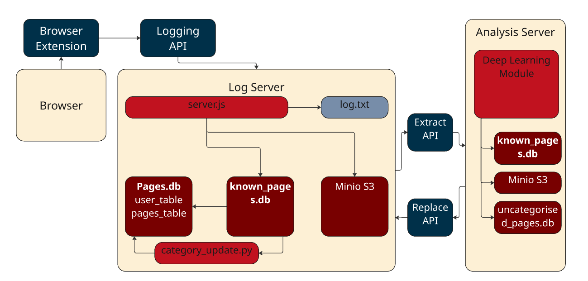

I spend a lot of time on the internet, like anybody. But I often feel by the end of a day spent on the internet I don't have a very clear view of what it is that I have done and what it is that I have achieved on the internet.
As such I wanted to be able to build a browser extension that would track the pages I have visited in a day and give me a digest of my daily activity.
I also wanted this to be the catalyst for a general online assistant that could help me stay focused on tasks, to be sure I deal with emails that I need to deal with and to help use the daily digest to help keep me on track with projects I’m working on.
From this I set out an architecture that would record pages being viewed via the extension and record them into a database. It would also take a text capture of the full site and store this in a Minio S3 bucket on a logging server. The logging server would also contain a database of known websites with categorisation information about them which could be cross-referenced against to update each row in the pages database.
All of this could then be extracted to an analysis server that could review any gaps in categorisation and through Deep Learning and Machine learning understand what any unknown websites are for and be able to update content back into the logging server.
I began putting together the basic infrastructure required for this and decided to push into the first big task, which was to find a source for the known_sites and to make it usable data. Having found the Tranco database of the 4,500,000 most used websites, I found this a good place to start. However, this needed a lot of cleaning to turn it into something that I could use in any way. The first thing was to take out anything that was running under a subdomain and only take top level domains.
import pandas as pd
import tldextract
df = pd.read_csv("tranco_4QYVX.csv", names=["rank", "domain"])
def is_top_level(domain):
extracted = tldextract.extract(domain)
return extracted.subdomain == ""
df_filtered = df[df["domain"].apply(is_top_level)]
df_filtered.to_csv("01-TopLevelDomains.csv", index=False)
print(f"Original entries: {len(df)}, Filtered entries: {len(df_filtered)}")
This reduced how many entries there were, but not by a lot.
import pandas as pd
import tldextract
input_file = "01-TopLevelDomains.csv"
output_file = "02-NoRegional.csv"
df = pd.read_csv(input_file, header=None, names=["domain"])
global_domains = {"google", "amazon", "facebook", "yahoo", "youtube", "wikipedia", "ebay", "reddit"}
def is_regional_variant(domain):
extracted = tldextract.extract(domain)
domain_name = extracted.domain # Get the main domain without TLD
return domain_name in global_domains and extracted.suffix not in {"com", "org", "net"}
df_filtered = df[~df["domain"].apply(is_regional_variant)]
df_filtered.to_csv(output_file, index=False, header=False)
print(f"Filtered dataset saved as: {output_file}")
This reduced how many entries there were, but not by a lot. The next step was to remove regional variants of major known sites as I intend for consolidation of this to happen at a later point. This would take out things like Facebook.fr and Google.it etc.
import pandas as pd
import tldextract
input_file = "02-NoRegional.csv"
output_ru = "ru_sites.csv"
output_clean = "03-AfterRu.csv"
df = pd.read_csv(input_file, header=None, names=["domain"])
def is_ru_site(domain):
extracted = tldextract.extract(domain)
return extracted.suffix == "ru"
df_ru = df[df["domain"].apply(is_ru_site)]
df_clean = df[~df["domain"].apply(is_ru_site)]
df_ru.to_csv(output_ru, index=False, header=False)
df_clean.to_csv(output_clean, index=False, header=False)
print(f".ru sites saved as: {output_ru}")
print(f"Filtered dataset saved as: {output_clean}")
Now, whilst this had reduced a few of the results out of this, there were still 3.9 million sites remaining and therefore I decided to take a cut of the top 5,000 results. With this I decided to find out if the site gave a valid 200 response. Whilst there would likely be some sites that would be presenting some form of redirect, this could be reviewed in a later pass.
import pandas as pd
import requests
from tqdm import tqdm
input_file = "04.2-Top5K-30K.csv"
output_file = "05.2-Top5k-30KResponse.csv"
df = pd.read_csv(input_file, header=None, names=["domain"])
def check_website(domain):
url = f"https://{domain}" # Try HTTPS first
headers = {
"User-Agent": "Mozilla/5.0 (Windows NT 10.0; Win64; x64)"
}
try:
response = requests.get(url, headers=headers, timeout=5)
if response.status_code == 200:
return "Valid"
except requests.RequestException:
pass
return "Invalid"
df["status"] = [check_website(domain) for domain in tqdm(df["domain"], desc="Checking sites")]
df.to_csv(output_file, index=False, header=False)
print(f"Checked sites saved as: {output_file}")